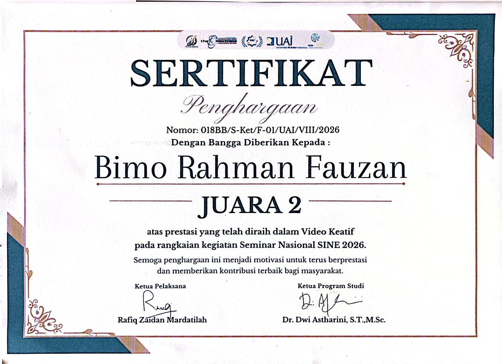
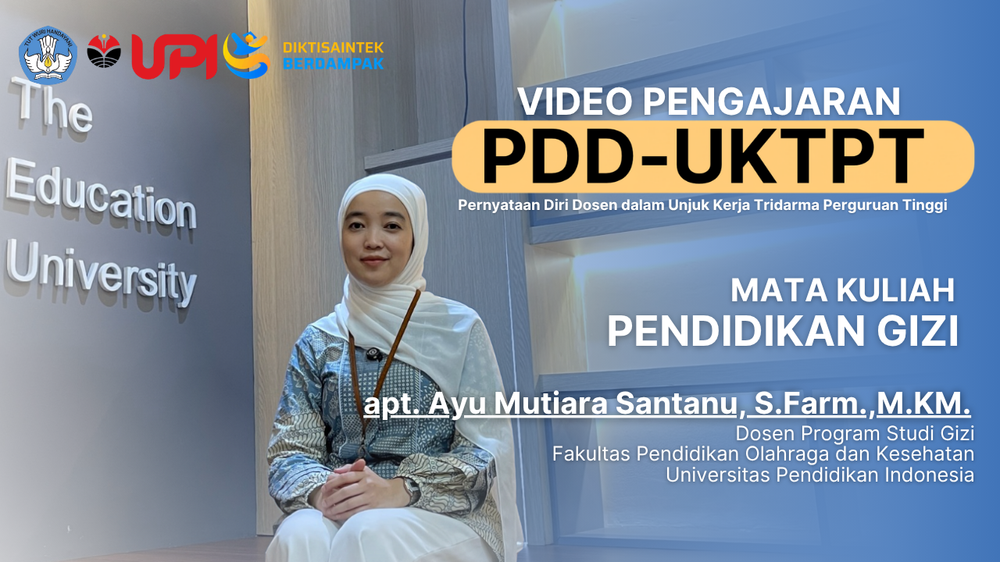
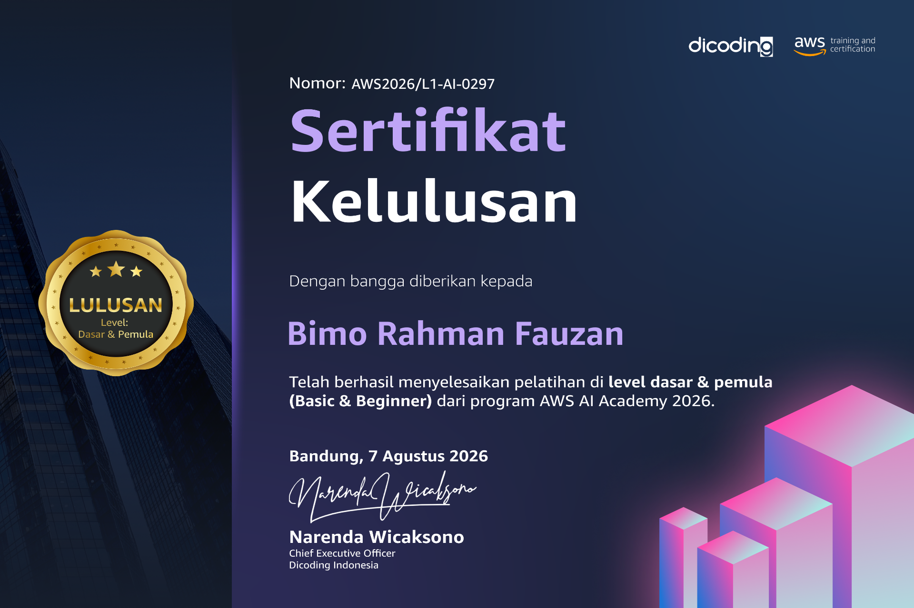
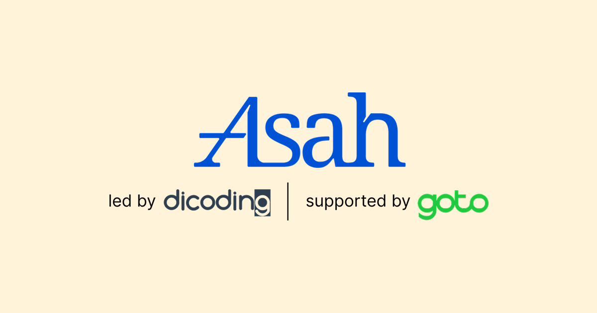
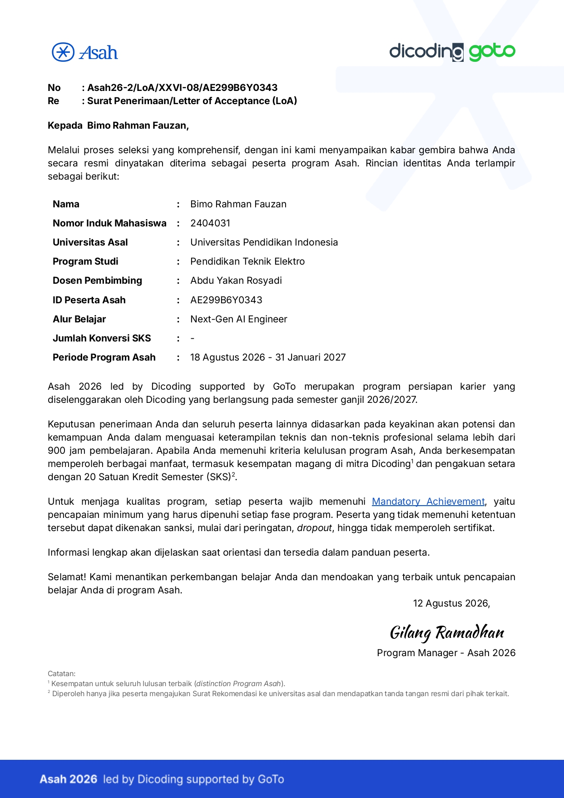
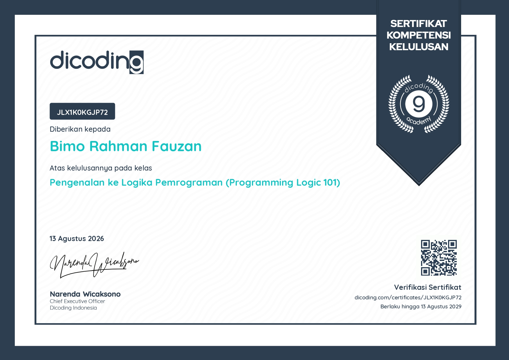
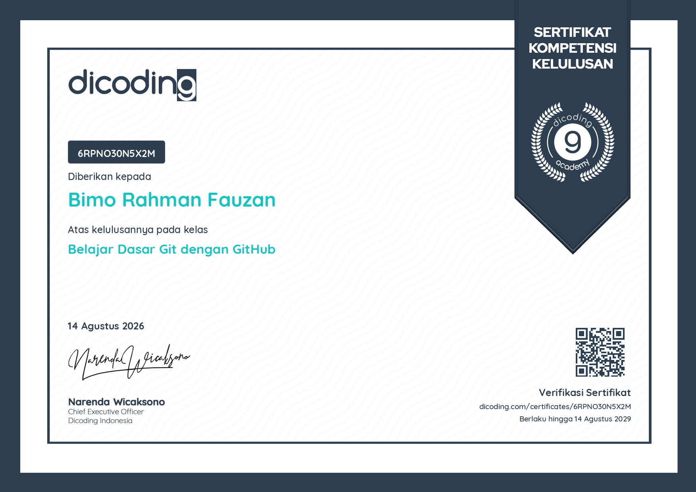
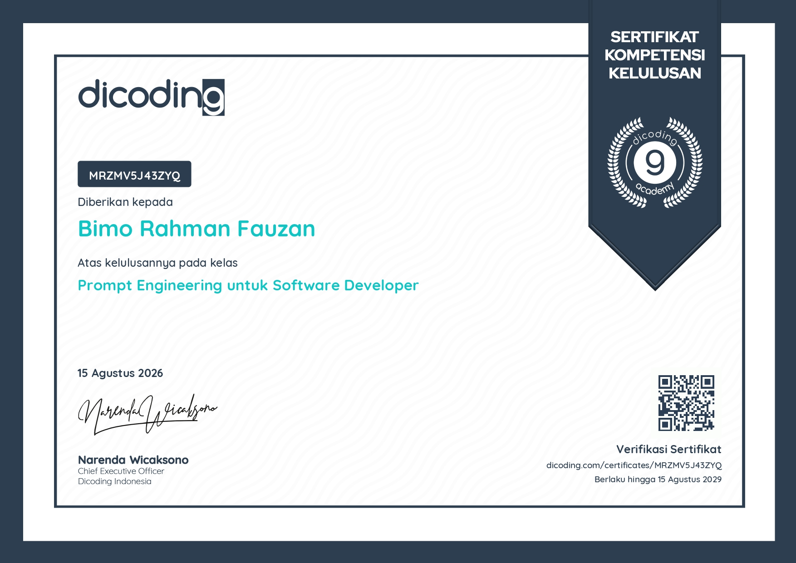

Mahasiswa Pendidikan Teknik Elektro di Universitas Pendidikan Indonesia dan seorang Creative Engineer yang menggabungkan kedisiplinan rekayasa teknik dengan keahlian multimedia visual. Memiliki rekam jejak profesional memimpin produksi puluhan konten digital berstandar industri, serta kompetensi adaptif di bidang teknologi dan komunikasi.
CREATIVE ENGINEER
Bimo Rahman Fauzan
Menggabungkan teknik elektro, IoT, kecerdasan buatan, produksi media, dan penceritaan visual untuk membangun karya yang fungsional, komunikatif, dan berdampak.
Tentang Saya
Rekayasa bertemu visual kreatif
Keahlian
Bangun kemampuan yang siap industri
Rekayasa Teknik
Implementasi kecerdasan buatan, konsep Internet of Things, dan analisis data.
Produksi Multimedia
Penyuntingan video, videografi, fotografi, penceritaan visual, CapCut, Lightroom, Premiere, dan Canva.
Kepemimpinan
Kepemimpinan kreatif, manajemen proyek, berbicara di depan umum, kolaborasi tim, dan manajemen waktu.
AIIoTPenyuntingan VideoFotografiKepemimpinanAnalisis Data
AIIoTPenyuntingan VideoFotografiKepemimpinanAnalisis Data
Karya & Rekam Jejak
Portofolio nyata,
bukan sekadar tampilan

🏆 Juara 1
Educational Video Competition 2026
Pemenang Utama dengan tema "Aksi Mahasiswa", diselenggarakan Gandawesi × River Cleanup Indonesia × UPI.

🥈 Juara 2
Video Kreatif SINE 2026
Meraih Juara 2 atas prestasi pada kompetisi Video Kreatif dalam rangkaian kegiatan Seminar Nasional SINE 2026.

Produksi Video
Video Pengajaran PDD-UKTPT
Memproduksi video pengajaran Mata Kuliah Pendidikan Gizi untuk unjuk kerja Tridarma Perguruan Tinggi.

Koordinator · Naskah & Editor
Nonton Di Pojokan
Sebagai Koordinator sekaligus naskah & editor video NDP — mengatur alur cerita dari perencanaan hingga hasil akhir.

Media Kampus
Ketua Multimedia Biro Visual
Tutorial UPI. Mengelola strategi konten dan memimpin produksi video aftermovie & laporan langsung.

Kampanye
Ketua Pelaksana Pusat Konten
SRE UPI. Memimpin kampanye konten edukasi energi terbarukan dari ide sampai publikasi.

Ketua Pelaksana
Studio Medkreinfo
Sebagai Ketua Pelaksana — memimpin perancangan kurikulum dan pelaksanaan pelatihan fotografi, videografi, dan desain grafis.

Sutradara
Podcast PTE
Sebagai Sutradara Podcast PTE yang mengatur keseluruhan produksi — dari konsep, pengambilan gambar, hingga penyuntingan serial profil alumni & mahasiswa PTE FPTI UPI.

Pengelolaan Video
Pengelola Video FPTI UPI
FPTI UPI. Mengelola dan memproduksi konten video untuk Fakultas Pendidikan Teknik dan Industri UPI, dari perencanaan hingga publikasi.

Dokumenter · FG & VG
Panitia Kairi x SZE
Sebagai Dokumenter (FG & VG) pada acara Meet & Greet Mabell x Kairi ft. Sze di Bekasi — menangani dokumentasi foto & video acara.
Bisnis & Wirausaha
Bangun visual yang punya cerita

Pendiri
BoroJepret (Boro Picture)
Pendiri & Kreator Visual. Layanan profesional fotografi dan videografi untuk mengabadikan momen berharga secara estetik, berkualitas tinggi, dan kekinian.
Sertifikasi
Sertifikat & penghargaan

Pemimpin Video
Kepala Editor Video
Bakti Milenial Foundation. Memimpin tim penyuntingan dan memproduksi 75+ video multi-platform dalam 3 bulan.

Dicoding × AWS
AWS AI Academy
Sertifikat penyelesaian pelatihan tingkat Dasar & Pemula (Basic & Beginner) dari program AWS AI Academy 2026.
.jpeg)
BNSP
Associate Data Scientist
Lisensi resmi dari Badan Nasional Sertifikasi Profesi melalui LSP Informatika.

Huawei
Sertifikasi AI & IoT
Sertifikasi kompetensi adaptif teknologi dari Huawei Talent.

Salesforce
Talent Accelerator
Sertifikat kelulusan program akselerasi talenta intensif Trailhead & Capstone.

Fasilitator
Peer Facilitator InnovAItion
Penghargaan dedikasi dari Plan International Indonesia & Kemenpora.

Pelatihan AI
Berinovasi dengan AI
Pelatihan kompetensi kecerdasan buatan sebanyak 15 jam pelajaran.

Karier
MSIB Boostcamp 2025
Pelatihan karier intensif untuk mengasah keterampilan dan membuka peluang.

Dicoding
Machine Learning untuk Pemula
Sertifikat kelulusan kelas "Belajar Machine Learning untuk Pemula" dari Dicoding Academy.

Dicoding
Back-End Pemula dengan Python
Sertifikat kelulusan kelas "Belajar Back-End Pemula dengan Python" dari Dicoding Academy.

Dicoding
Belajar Dasar AI
Sertifikat kelulusan kelas "Belajar Dasar AI" dari Dicoding Academy.
Dicoding
Memulai Pemrograman dengan Python
Sertifikat kompetensi kelulusan kelas "Memulai Pemrograman dengan Python" dari Dicoding Academy (30 Juli 2026, berlaku hingga 30 Juli 2029). Verifikasi: RVZK0D80OZD5.
Dicoding × AWS
Dasar Cloud & Gen AI di AWS
Sertifikat kelulusan kelas "Belajar Dasar Cloud dan Gen AI di AWS" dari Dicoding Academy (verifikasi: MRZMW0ERLPYQ).
Dicoding × Microsoft
Data Science dengan Microsoft Fabric
Sertifikat kelulusan kelas "Belajar Penerapan Data Science dengan Microsoft Fabric" dari Dicoding Academy (28 Juli 2026, 6 jam) — eksplorasi data dengan Notebook, preprocessing dengan Data Wrangler, training & tracking model dengan MLflow, hingga batch prediction dari model yang di-deploy. Verifikasi: 53XE1V06VZRN.
Dicoding × Microsoft
Aplikasi Gen AI dengan Microsoft Azure
Sertifikat kelulusan kelas "Membangun Aplikasi Gen AI dengan Microsoft Azure" dari Dicoding Academy (28 Juli 2026, 8 jam) — deployment LLM di Azure AI Foundry, Azure AI Foundry SDK, Prompt Flow, aplikasi RAG dengan Azure AI Search, fine-tuning, Responsible AI, dan evaluasi performa. Verifikasi: 81P2O98QYZOY.
Program Persiapan Karier

Alur Belajar
Next-Gen AI Engineer

Letter of Acceptance
Penerimaan Program ASAH 2026
Diterima secara resmi sebagai peserta program persiapan karier ASAH 2026 untuk alur belajar Next-Gen AI Engineer. Program intensif 900 jam pembelajaran yang diselenggarakan oleh Dicoding dan didukung oleh GoTo.
Dicoding
Dasar Pemrograman Software
Sertifikat kompetensi kelulusan kelas "Memulai Dasar Pemrograman untuk Menjadi Pengembang Software" dari Dicoding Academy sebagai bagian dari pembelajaran di Program ASAH. Verifikasi: 53XEMLML9PRN.

Dicoding
Logika Pemrograman 101
Sertifikat kompetensi kelulusan kelas "Pengenalan ke Logika Pemrograman (Programming Logic 101)" dari Dicoding Academy sebagai bagian dari pembelajaran di Program ASAH. Verifikasi: JLX1K0KGJP72.

Dicoding
Belajar Dasar Git dengan GitHub
Sertifikat kompetensi kelulusan kelas "Belajar Dasar Git dengan GitHub" dari Dicoding Academy sebagai bagian dari pembelajaran di Program ASAH. Verifikasi: 6RPNO30N5X2M.

Dicoding
Prompt Engineering
Sertifikat kompetensi kelulusan kelas "Prompt Engineering untuk Software Developer" dari Dicoding Academy sebagai bagian dari pembelajaran di Program ASAH. Verifikasi: MRZMV5J43ZYQ.
Dicoding
Fundamental Deep Learning
Sertifikat kompetensi kelulusan kelas "Belajar Fundamental Deep Learning" dari Dicoding Academy sebagai bagian dari pembelajaran di Program ASAH. Verifikasi: 2VX3VW7EQPYQ.
Dicoding
Fundamental Generative AI
Sertifikat kompetensi kelulusan kelas "Belajar Fundamental Generative AI" dari Dicoding Academy sebagai bagian dari pembelajaran di Program ASAH. Verifikasi: MRZMVG4QLZYQ.